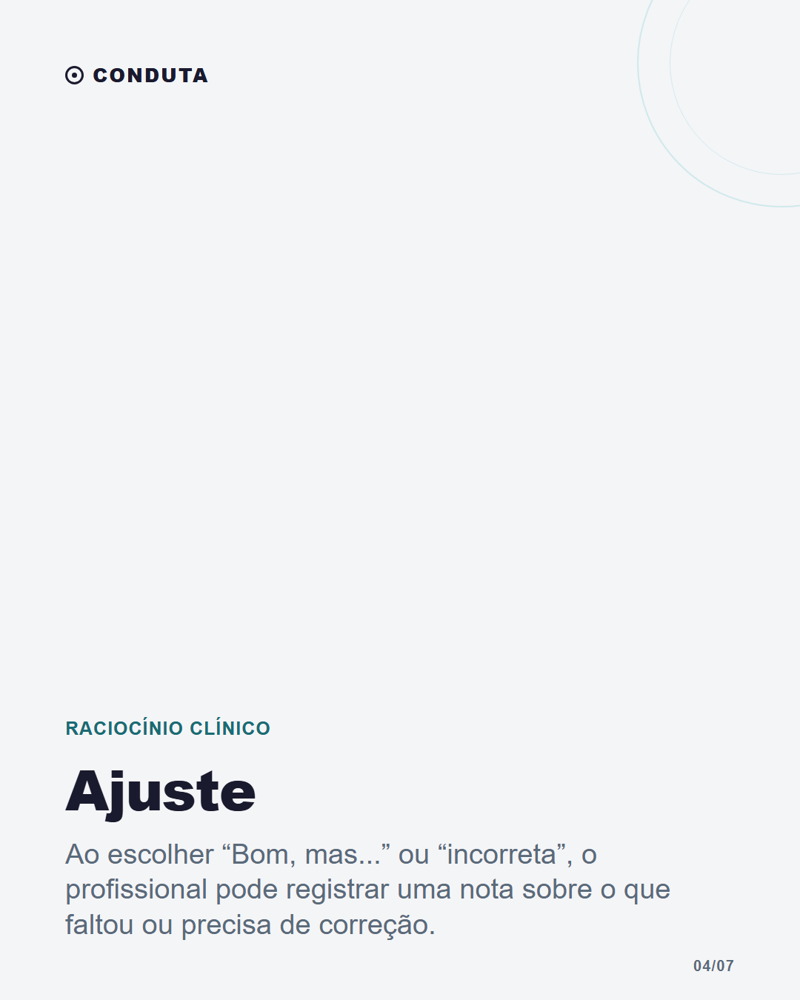

Nem toda resposta é oito ou oitenta

Legenda
Uma resposta que precisa de ajuste não precisa ser descartada em silêncio. O Conduta permite indicar quando uma análise foi útil, parcialmente útil ou incorreta e acrescentar uma observação. Esse retorno faz parte de um uso mais atento da ferramenta: ler, conferir, questionar e registrar o que precisa ser revisto. O feedback não substitui validação clínica nem garante que uma resposta esteja correta. Ele é um canal de revisão dentro do produto.
CTA: Você usaria esse tipo de retorno durante a análise?
#raciocinioclinico #tecnologianasaude #medicinageral #melhoriacontinua #medicosbrasileiros
Validação
Nenhum erro impeditivo.
Alertas
- screenshots: O post solicita screenshot ou mockup.
Use somente captura autorizada com dados fictícios ou o mockup local.